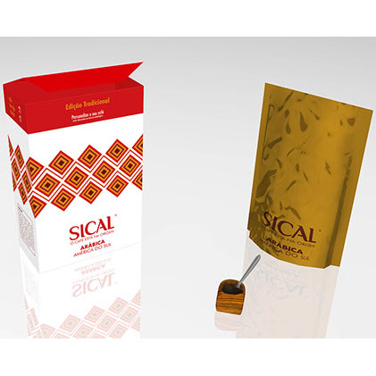
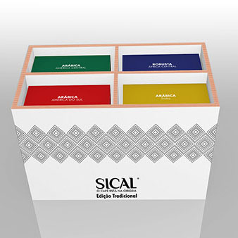
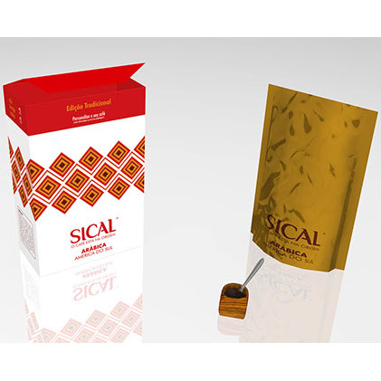
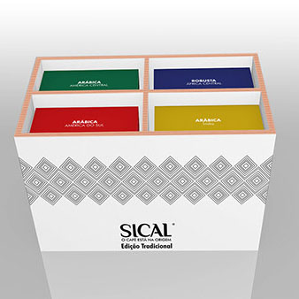

Sical: Limited Edition
This project was developed in an academic context of Project III, in Instituto Politécnico do Cávado e do Ave. The objective was the development of three packages for an special edition packaging of any existent Brand/Logo. In this case, this edition would have at least eight packages. The chosen brand/logo was Sical, being the main concept the intesification of the coffee's origin and customization, to grant the consumer the ability to create his own coffee at home, from coffee beans that are included in each package of this special edition. If the consumer buys three packages, he would get an organizer, making the ordering of the packages easier, and he would also get a little container of wood, to make the process of mixing coffee easier.
 


